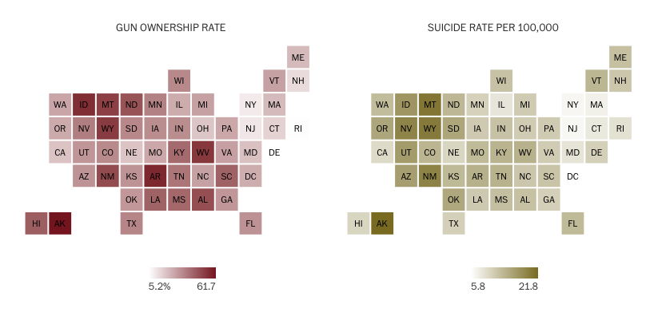

3 Introducing geographic data
So far, we have covered basic programming with Python. Before we move on to manipulating geographic data using both QGIS and Python, let’s introduce some fundamental geographic elements. In this section, we will discuss the availability and potential uses of geographic data, introduce the most common data types and operations, and explore one of the most crucial concepts in geographic data science: projections.
Spatial data encompasses information implicitly or explicitly tied to a location on either a geographic sphere or a 2D surface, including points and lines. Its spatial dimension facilitates the examination of various phenomena:
- Resource distribution disparities: Access to natural resources, geographic features, climate patterns, and human capital.
- Economic activity and wealth distribution: Variations in GDP, housing prices, consumption patterns, and industry composition across geographical areas.
- Spatial interactions and relationships: Movement of resources, spillovers, and exchanges across different locations.
While readers with a background in Economics may find these concepts familiar, the widespread use of geospatial data in recent years has made geography and geographic data a part of our daily lives. You may have already interacted with geospatial data today:
- Utilized navigation apps for directions.
- Tagged locations in social media posts.
- Received your delivery packages at a time that was the result of the optimization of the delivery route.
3.1 To map or not to map, that is the question
The examples above highlight the prevalence of geographic data and geographic data science in our daily routines. Although spatial data is often equated with maps, its utility extends beyond mere cartography. Maps serve as tools to visualize spatial data, but there are numerous other analytical applications. Let’s explore some examples:
The black belt and the election of a senator
In 2017, for the first time in 25 years, a Democrat, Doug Jones, was elected as senator for Alabama. The two maps below explore the possible correlation between historical factors and political outcomes. The first map indicates the distribution of counties with a significant historical presence of slavery, known as the “black belt” due to its fertile soil conducive to plantation crops and hence prone to slavery. Interestingly, the second map overlays the counties that voted for the Democrat senator.

While there appears to be a spatial coincidence between the two, understanding the statistical significance of this correlation is best achieved through a scatter plot analysis.

Nonetheless, while the set of maps may not be the optimal choice for visualizing correlation, they do serve as a good example to observe the phenomenon of spatial correlation. This refers to the tendency for nearby values, in this case, soil characteristics/slavery and voting behavior, to exhibit similar patterns or characteristics.
Gun ownership and suicides
The following maps, featured in a 2016 Washington Post article, aimed to indicate a potential correlation between gun ownership and suicide rates.

While examining both maps, it would seem that high values cluster in similar locations on both. However, understanding the correlation between the two variables is clearer when viewing the scatterplot.
The maps, however, have the advantage of representing all areas in the same size, thus avoiding visual distortions induced by differences in the sizes of States, which is a concept we will discuss later on in the course.
The main purpose of including these two examples is to emphasize that maps should not primarily focus on displaying correlations, as other visual plots are designed for that purpose, but rather on showing geographic patterns. Additionally, they also show that creating maps is not always straightforward, and there may be instances where distorting geography becomes necessary to effectively transmit messages.
But then, when should we map? Well, in some cases, there are no other options. Take, for instance, a commuting flow map, which will be one of our topics. In Spain, there are 3,214 mobility areas and approximately 66,000 origin-destination pairs. Representing this dataset poses questions. Should we use a matrix? If we have 3,214 * 3,214 potential origin-destination pairs, those are the dimensions of our matrix. What would we learn from that matrix? In cases like this, mapping is the answer! A flow map of displacements would not only summarize all this information but also potentially reveal additional insights beyond what a simple matrix representation could offer.
This discussion highlights the importance of knowing when to use maps effectively. Historically, there have been excellent examples of maps that originated breakthroughs. John Snow’s cholera map from 1854 is a classic case.
In 1854, a cholera outbreak in Soho, London, killed over 120 people in just three days. Dr. John Snow was skeptical of the prevailing belief that cholera spread through the air. To better understand the outbreak and its diffusion, he identified the homes affected by the disease and plotted the locations of the dead on a map. He discovered that these locations clustered around a pump on Broad Street. This analysis helped him identify the source of the epidemic: a contaminated water well. He suggested shutting down the well, which led to saving many lives.
This story is famous because it is often considered the first epidemiological analysis of disease, demonstrating how environmental factors can contribute to its spread and the first geographic analysis of disease by plotting points on a map and looking for relationships. In fact, this discovery revolutionized public health by challenging the prevailing belief that diseases spread through the air.
Mapping can also be used to provide insights into social and economic conditions. Charles Booth (1840-1916) was dissatisfied with the Census information on poverty in London, believing it to be inaccurate. He conducted his own survey investigating Londoners’ workplaces, working conditions, homes, and urban environments.

This research culminated in the Inquiry into the Life and Labour of the People in London (1886-1903). One of the most well-known pieces of this work is the Maps Descriptive of London Poverty, which maps poverty and wealth levels street by street. These maps are an early example of social cartography, as each street is colored according to the income and social class of its inhabitants, ranging from “Lowest class. Vicious, semi-criminal.” to “Upper-middle and upper classes. Wealthy”.
Visualizing geographic data involves more than just making maps. Take aerial images of two regions with distinctly different built environments, for instance. These differences would be visible from the images. But how could we summarize them? By rearranging the pixels based on color, we could use color gradients to fully characterize these areas. What if we could use these gradients to gain more insights? Since the gradients reflect the built environment, they also encapsulate characteristics of the area’s inhabitants. This connection could be extended to analyze political behaviors, providing a way to link the built environment with political patterns. This innovation was precisely behind the idea of this New York Times article, in which they mapped vote shares to color gradients to show political voting behavior along the urban and rural divide.
3.2 Spatial data is special
Location is treated in a unique way across various dimensions:
Computationally, managing and analyzing spatial data requires using specific software (GIS). GIS can be defined in different ways (see the definitions at GISGeography) but all definitions share the following elements:
Computer Systems: Computers have changed the way we work with geographic data.
Geographic Data: GIS are designed to work with location-based data.
Information: They integrate geographic data and their descriptive attributes. They allow visualizing them in the form of maps.
Analytical: They allow analyzing and drawing conclusions from geographic data and underlying processes, beyond just mapping.
So, we could say that a GIS is a software to connect data with geography through techniques of visualization and spatial analysis.
Visually, spatial data allows for the creation of maps. But as we just discussed, we may not always want to create maps. Keep in mind that maps, just like models, are representations of complex phenomena, relying on certain assumptions. Thus, being representations of reality all of them will be somehow wrong, but some of them will also be useful (Ord, 2010).
Statistically, location requires consideration of spatial dependence and spatial errors. According to the Laws of Geography articulated by Tobler (1970, 1999), “Everything is related to everything else, but near things are more related than distant things,” and “Phenomena external to a geographic area affect what happens within it.” All of this imply that in geographic setups, most of the standard statistical assumptions we rely on, will not hold.